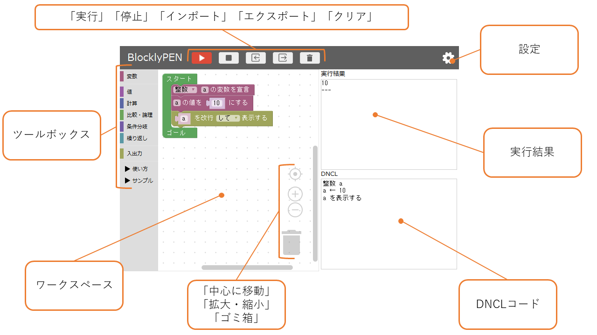

BlocklyPENの使い方
BlocklyPENとは
BlocklyPENとは、名古屋高等学校で教師をしていらっしゃる「中西 渉（なかにし わたる）」先生が作成したWaPENと、Googleが提供しているライブラリBlocklyを組み合わせた、センター試験用手順記述標準言語(DNCL)の勉強用教材です。
BlocklyPENでは、ブロックを組み合わせてプログラミングを行うことができます。これは、「文字入力の手間が減り、誤字や脱字を減らすことができる」、「ブロックが色分けされており、構文の種類や位置関係を明確にすることができる」といった、ブロックプログラミングならではのメリットをもたらします。
使い方
BlocklyPENでは、用意されたブロックを組み合わせてプログラムを作成することができます。
インターネットに繋がっていれば何もインストールせずに使うこともできますし、あらかじめファイルを保存しておけば、インターネットに繋がっていなくても（オフライン）使うことができます。
BlocklyPENは、DNCLを拡張した言語(xDNCL)を用います。
xDNCLとBlocklyPENの実践的な使い方は、こちらで学ぶことができます（工事中）。
オフラインでBlocklyPENを使いたい場合は、こちら(zip)かこちら(GitHub)から保存してください。
保存したファイルを解凍し、解凍したフォルダの中にある「index.html」をダブルクリックしてください。ブラウザが起動するか、すでに起動している場合は新しいタブなどにBlocklyPENが表示されます。
動作環境
BlocklyPENはパソコン上で動かすことを想定しており、スマートフォンやタブレットには対応しておりません。
ブラウザ単体で動かせるため、Javaをインストールする必要はありません。
BlocklyPENは、以下のブラウザに対応しています（多分）。
- Google Chrome
- Mozilla Firefox
用語
| 項目 | 説明 |
|---|
| ドラッグ | クリックボタンを押しながらマウスを動かすこと。 |
| ドロップ | クリックボタンの長押しをやめること。 |
| D&D（ドラッグ＆ドロップ） | ドラッグとドロップを続けて行うこと。 |
画面 (2019年1月13日)

| 項目 | 説明 |
|---|
| 実行 | ワークスペースで作ったプログラムを実行する。 |
| インポート | エクスポートしたファイルを指定して読み込み、ワークスペースに反映する。 |
| エクスポート | 作成したブロックをXMLファイルとして保存する。 |
| クリア | ワークスペース上のブロックと実行結果をクリアする。
※スタートブロックも消えてしまう不具合あり。 |
| ブロックタブ | ツールボックスとワークスペースを表示する。 |
| PENタブ | ワークスペースで作成したブロックをPENのコードに変換したテキストを表示する。 |
| ツールボックス |
ワークスペースでブロックを組むためのブロックが格納されている。
ブロックは各カテゴリに分けられており、カテゴリをクリックすることでブロックが表示される。
表示されたブロックをD&Dしてワークスペースに移動させる。 |
| ワークスペース |
ブロックを組む（プログラムを作る）領域。
右クリックすることで、直前の状態に戻したり、ブロックを削除したりできる。 |
| 中心に移動 | ワークスペースの中心に移動する。 |
| 拡大・縮小 | ワークスペースを拡大・縮小する。 |
| ゴミ箱 |
ブロックを削除する。
ワークスペースに置かれた不要なブロックをここにD&Dして削除することができる。 |
| 実行結果 | 実行した結果がここに表示される。 |
| 実行結果クリア | 実行結果をクリアする。 |
| 設定 | 変数の宣言が必要なモードと必要でないモードの切り替え、ツールボックのレベルの変更が行える。 |
ブロックの種類
変数カテゴリ
変数宣言ブロック
変数を宣言する。
プルダウンメニューから宣言する変数の型を指定し、変数ブロックの名前の変数を宣言する。
1次元配列宣言ブロック
1次元配列を宣言する。
プルダウンメニューから宣言する変数の型を指定し、変数ブロックの名前の配列を宣言する。
指定された大きさ分の1次元配列が作られる。
代入ブロック
変数に値を代入する。
1つ目の空白に変数ブロックを置き、2つ目の空白に変数ブロックや値ブロックを置くことで、
左辺の変数に右辺値を代入することができる。
左辺には変数ブロックしか置くことができない。
BlocklyPEN上では、変数ブロックが最初からセットされている。
変数ブロック
変数を参照する。
「≪変数≫」に参照したい変数名を入力することで、入力した名前の変数名を参照する
1次元配列ブロック
1次元の配列を参照する。
変数ブロックとほとんど使い方は同じだが、配列の要素番号を指定することができる。
増減ブロック（初学者用）
1
変数の値を増減する。
2つ目のブロック分だけ変数の値を増やす［減らす］ことができる。
代入ブロックで代用できるが、繰り返しブロックなどで変数の値を1増やしたい場合などにそれを簡単に実現することができる。
主に繰り返しブロックで使用する。
値カテゴリ
整数ブロック
整数値を入力する。
整数型の変数に代入したり計算に使用する。
-9007199254740991～9007199254740991までの値を扱える。
実数ブロック
実数値を入力する。
実数型の変数に代入したり計算に使用する。
整数部分を入力した後にTabキーを押下すると、マウスを使わずに
カーソルを小数部分を移動できる。小数部分から整数部分にカーソルを
移動させるには、Shiftキーを押下しながらTabキーを押下する。
文字列ブロック
文字列値を入力する。
文字列型の変数に代入したり文字列を表示するために使用する。
文字列化ブロック
値を文字列値に変換する。
数字でなく文字列として連結・出力したい場合などに使用する。
真偽ブロック
真偽値を入力する。
真偽型の変数に代入したり真偽を判定するために使用する。
円周率ブロック
円周率を得る。
※実際には円周率の近似値が得られる。
計算カテゴリ
演算ブロック
「＋」「－」「×」「÷」「％」の演算を行う。
プルダウンメニューから演算子を指定し、演算子の左右のブロックの演算を行う。
演算結果を代入ブロックの右辺として利用したり、演算ブロックの中に演算ブロックを入れて
利用する（入れ子）。
ランダムブロック
ランダムな数値を取得するためのブロック。
空欄に整数ブロックか整数型の変数ブロックを入れることで、0からブロックまでの間の値を取得することができる。
絶対値ブロック
絶対値を取得するためのブロック。
空欄に実数ブロックか実数型の変数ブロックを入れることで、そのブロックの値の絶対値を取得することができる。
ラウンドブロック
「切り上げ」「切り捨て」「四捨五入」した値を取得するためのブロック。
空欄に実数ブロックか実数型の変数ブロックを入れることで、そのブロックの値に対する切り上げた値・切り捨てた値・四捨五入した値の
いずれかを取得することができる。
三角関数ブロック
「sin」「cos」「tan」の値を取得するためのブロック。
空欄に実数ブロックか実数型の変数ブロックを入れることで、そのブロックの値に対するsin値・cos値・tan値の
いずれかを取得することができる。
平方根ブロック
平方根を取得するためのブロック。
空欄に実数ブロックか実数型の変数ブロックを入れることで、そのブロックの値に対する平方根を取得することができる。
対数ブロック
対数を取得するためのブロック。
空欄に実数ブロックか実数型の変数ブロックを入れることで、そのブロックの値に対する対数を取得することができる。
ネイピアブロック
Eの累乗を取得するためのブロック。
空欄に実数ブロックか実数型の変数ブロックを入れることで、そのブロックの値を指数としたEの累乗を取得することができる。
累乗ブロック
累乗を取得するためのブロック。
空欄に実数ブロックか実数型の変数ブロックを入れることで、「1つ目のブロック」の「2つ目のブロック乗」の値を取得することができる。
数式ブロック（中級者用）
数式を入力するためのブロック。
自分で数式を入力したい場合に使用する。
※複合代入演算・インクリメント・デクリメント・複数回の代入には非対応
比較・論理カテゴリ
比較ブロック
「＝」「≠」「＜」「≦」「＞」「≧」の演算を行う。
プルダウンメニューから演算子を指定し、指定した演算子で演算を行う。
演算結果を条件分岐ブロックの条件として利用したりする。
アンドブロック
論理積演算を行う。
2つのブロックの論理積をとり、その結果を得る。
オアブロック
論理和演算を行う。
2つのブロックの論理和をとり、その結果を得る。
ノットブロック
否定演算を行う。
入力されたブロックの否定をとり、その結果を得る。
条件分岐カテゴリ
条件分岐ブロック
条件分岐を行う。
「比較ブロック」などを置いて使用する。
条件が真であればこのブロックの間に置かれたブロックを実行する
二分条件分岐ブロック
条件分岐を行う。
「比較ブロック」などを置いて使用する。
条件ブロックと使い方は同じだが、条件が偽であったときも動作を指定できる。
条件分岐ブロック（使用不可）
条件分岐を行う。
「比較ブロック」などを置いて使用する。
条件が真であればこのブロックの間に置かれたブロックを実行し、
偽であればこのブロックに接続された下のブロックを実行する。
繰り返しカテゴリ
簡易版繰り返しブロック（初学者用）
指定回数だけブロックを実行する。
入力欄に入力された回数だけブロックが繰り返し実行される。
※WaPENで動くように「tempxxxxxx」のような名前の変数が自動で宣言される。
繰り返しブロック
条件が真の間、ブロックを実行する。
条件部分には比較ブロックなどを置く。
このブロックを初めて実行するときとブロックがすべて実行された後に比較が行われる。
※無限ループに注意
後判定型繰り返しブロック（中級者用）
条件が偽の間、ブロックを実行する。
繰り返しブロックとは違い、必ず一度はこのブロック内のブロックが実行される。
条件が偽の間、繰り返し実行される。
※無限ループに注意
指定回型繰り返しブロック
10
1
指定した値から値までの間、ブロックを実行する。
1つ目のブロックは「変数ブロック」しか置くことができない。
このブロックは、
①：1つ目の「変数ブロック」に2つ目の値を代入する
②：「変数ブロック」の値が2つ目の値と3つ目の値の間の場合はブロックを実行する
③：「変数ブロック」の値を4つ目の値分増やすor減らす
④：②～③を繰り返す
という流れで実行する。
入出力カテゴリ
入力ブロック
キーボードからの値を変数に代入する。
この文が実行されると入力を促すウィンドウが表示され、そこに値を入力することができる。
入力した値はこのブロックに置いた変数ブロックに代入される。
このブロックには変数ブロックしか置くことができない。
文字列表示ブロック
入力された文字列を表示する。
文字列を入力し、改行の有無を選択して表示する。
値表示ブロック
置かれたブロックの値を表示する。
置かれたブロックの値を改行の有無を選択して表示する。
関数カテゴリ
関数定義ブロック（中級者用）
関数を定義する。
「≪関数≫」に定義する関数の名前を指定する
歯車のアイコンをクリックすると吹き出しが出現し、仮引数の個数を指定できる。
手続き定義ブロック（中級者用）
手続きを定義する。
「≪手続き≫」に定義する手続きの名前を指定する。
歯車のアイコンをクリックすると吹き出しが出現し、仮引数の個数を指定できる。
返却ブロック（中級者用）
関数の呼び出し元に値を返却する。
「変数ブロック」や「値ブロック」を置き、その値を関数の呼び出し元に
返却する。
関数を定義した場合は必ず1つ以上は使わなけらばならない。
脱出ブロック（中級者用）
手続きを抜ける。
手続きの途中で処理を終了したい場合に使用する。
手続きを定義した場合でも必ず使う必要はない。
関数呼び出しブロック（中級者用）
関数を呼ぶ。
「≪関数≫」に呼び出す関数の名前を指定する。
歯車のアイコンをクリックすると吹き出しが出現し、実引数の個数を指定できる。
手続き呼び出しブロック（中級者用）
手続きを呼ぶ。
「≪手続き≫」に呼び出す手続きの名前を指定する。
歯車のアイコンをクリックすると吹き出しが出現し、実引数の個数を指定できる。